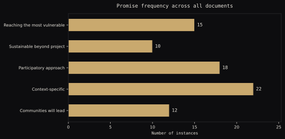
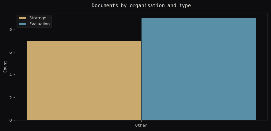
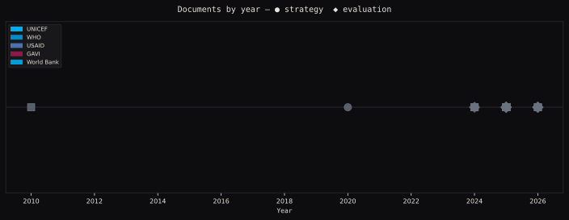

0
Documents Tracked
0
Promise Instances Found
Promise frequency across all documents
Visual archive
The promises made
A strategy document illustration from the archive.
What evaluations found
All documents plotted by year. Strategy dots cluster in waves. Evaluations follow later.
Document timeline
Broken promise index
| Organisation | Strategy docs | Evaluation docs | Promise instances | Most common promise type | Volume |
|---|
Data visualisations

How often each type of promise appears across the full archive. Community ownership and context-sensitivity are the most repeated.

Strategy documents vastly outnumber evaluations in every organisation's archive. The gap is the argument.

Every document in the archive by year. Strategy documents cluster in waves. Evaluations follow years later - when they follow at all.
How this works
Loading methodology...